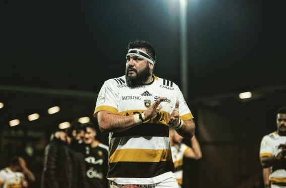

FOMO nació en Vicente López con una idea simple: crear un espacio donde cada café se convierta en un momento para disfrutar, conectar y bajar el ritmo de la rutina.
Nos especializamos en café de especialidad, gastronomía de calidad y una experiencia pensada para quienes valoran los detalles.
Más que una cafetería, FOMO busca ser un punto de encuentro donde la comunidad, la creatividad y los buenos momentos tengan su lugar.
Ramiro "Cumpa" Herrera, ex jugador profesional de rugby y referente de Los Pumas, es el fundador de FOMO Café.
Tras una destacada carrera deportiva en Argentina y Europa, decidió trasladar los valores que marcaron su trayectoria: disciplina, trabajo en equipo y búsqueda constante de la excelencia, al mundo del café de especialidad.
Hoy lidera FOMO con la visión de crear un espacio donde la calidad, la comunidad y los pequeños momentos cotidianos sean protagonistas.